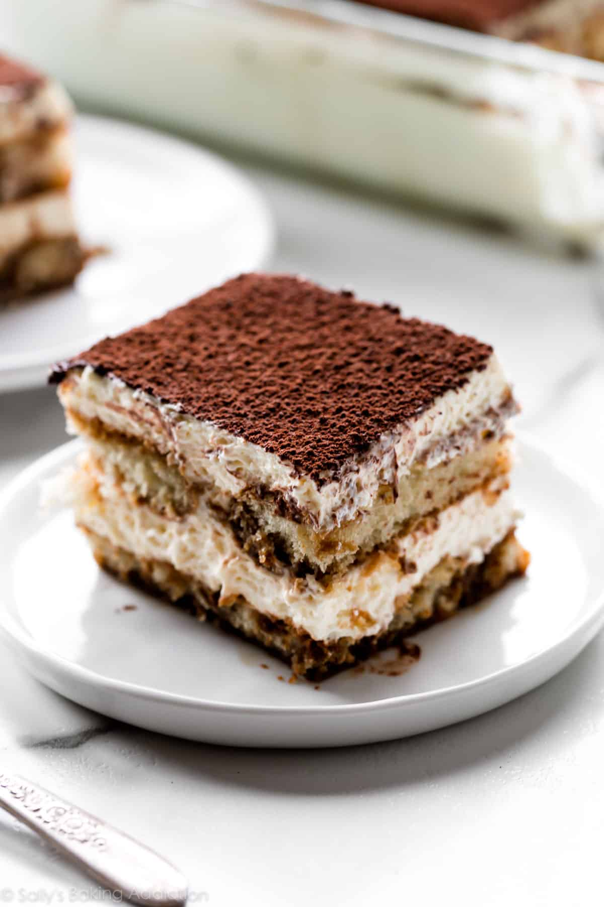

Home
Tiramisu Cake

Description
Tiramisu cake is a fun twist on classic Italian tiramisu. It consists of cake layers soaked in coffee syrup layered with a mascarpone filling and creamy icing. This easy recipe calls for a package of white cake mix.
Ingredients
These are the ingredients you’ll need to make this decadent tiramisu cake:
- For the cake:
- 1 (15.25 ounce) package moist white cake mix
- 1 cup water
- 3 large egg whites
- ⅓ cup vegetable oil
- 1 teaspoon instant coffee powder
- For the coffee syrup:
- ¼ cup coffee
- 1 tablespoon coffee flavored liqueur
- For the filling:
- 1 (8 ounce) container mascarpone cheese
- ½ cup confectioners' sugar
- 2 tablespoons coffee flavored liqueur
- For frosting:
- 2 cups heavy cream
- ¼ cup confectioners' sugar
- 2 tablespoons coffee-flavored liqueur
- Garnishes:
- 2 tablespoons unsweetened cocoa powder
- 1 (1 ounce) square semisweet chocolate
Steps
- Gather the ingredients. Preheat the oven to 350 degrees F (175 degrees C). Grease and flour three 9-inch pans.
- To make the cake: Beat cake mix, water, egg whites, and oil in a large bowl with an electric mixer on medium speed until well combined, about 2 minutes. Divide 2/3 of the batter between 2 prepared pans. Stir instant coffee into remaining batter; pour into the remaining prepared pan.
- Bake in the preheated oven until a toothpick inserted into the center of cakes comes out clean, 23 to 28 minutes. Cool cakes in the pans for 10 minutes, then turn out onto a wire rack to cool completely.
- To make the syrup: Combine brewed coffee and coffee liqueur in a measuring cup; set aside.
- To make the filling: Beat mascarpone, confectioners' sugar, and coffee liqueur in a medium bowl with an electric mixer on low speed until smooth. Cover with plastic wrap and place in the refrigerator to keep cool.
- To make the frosting: Beat cream, confectioners' sugar, and coffee liqueur in a medium bowl with an electric mixer on medium-high speed until stiff. Fold 1/2 cup frosting into chilled filling until combined. Store frosting and filling, covered, in the refrigerator to keep cool.
- To assemble the cake: Place 1 plain cake layer on a serving plate. Using a thin skewer, poke holes in cake, about 1 inch apart. Pour 1/3 of the coffee syrup over cake, then cover with 1/2 of the filling. Top with coffee-flavored cake layer; poke holes in cake. Pour another 1/3 of the coffee syrup over cake and cover with remaining filling. Top with remaining cake layer; poke holes in cake. Pour remaining coffee syrup on top. Spread sides and top of cake with frosting.
- To garnish the cake: Place cocoa powder in a sieve and lightly dust top of cake. Run a vegetable peeler down the edge of chocolate square to form curls. Scatter chocolate curls over cake.
- Chill cake in the refrigerator for at least 30 minutes before serving.
Chocolate Chip Cookies

Description
This chocolate chip cookie recipe is truly the best. Just take it from the 14,000 members of the Allrecipes community who have given it rave reviews! These chocolate chip cookies are beloved because they're soft, chewy, and absolutely irresistible. Our top-rated recipe for chocolate chip cookies will quickly become your go-to.
Ingredients
These are the kitchen staples you'll need to make the best chocolate chip cookies of your life:
- 1 cup butter, softened
- 1 cup white sugar
- 1 cup packed brown sugar
- 2 large eggs
- 2 teaspoons vanilla extract
- 1 teaspoon baking soda
- 2 teaspoons hot water
- ½ teaspoon salt
- 3 cups all-purpose flour
- 2 cups semisweet chocolate chips
- 1 cup chopped walnuts
Steps
- Gather your ingredients, making sure your butter is softened, and your eggs are room temperature.
- Preheat the oven to 350 degrees F (175 degrees C). Beat butter, white sugar, and brown sugar with an electric mixer in a large bowl until smooth.
- Beat in eggs, one at a time, then stir in vanilla.
- Dissolve baking soda in hot water. Add to batter along with salt.
- Stir in flour, chocolate chips, and walnuts.
- Drop spoonfuls of dough 2 inches apart onto ungreased baking sheets.
- Bake in the preheated oven until edges are nicely browned, about 10 minutes.
- Cool on the baking sheets briefly before removing to a wire rack to cool completely.
- Store in an airtight container or serve immediately and enjoy!
🍽️ Happy Cooking! 🍳